Unsere Themen
Kunst & Kultur
Düsseldorf ist eine Kunststadt – oberirdisch wie unterirdisch. Wir zeigen Ihnen, wo die Stadt kreativ wird: von U-Bahnhöfen als Kunstwerken über große Namen wie Joseph Beuys bis zur Street-Art in den Hinterhöfen.

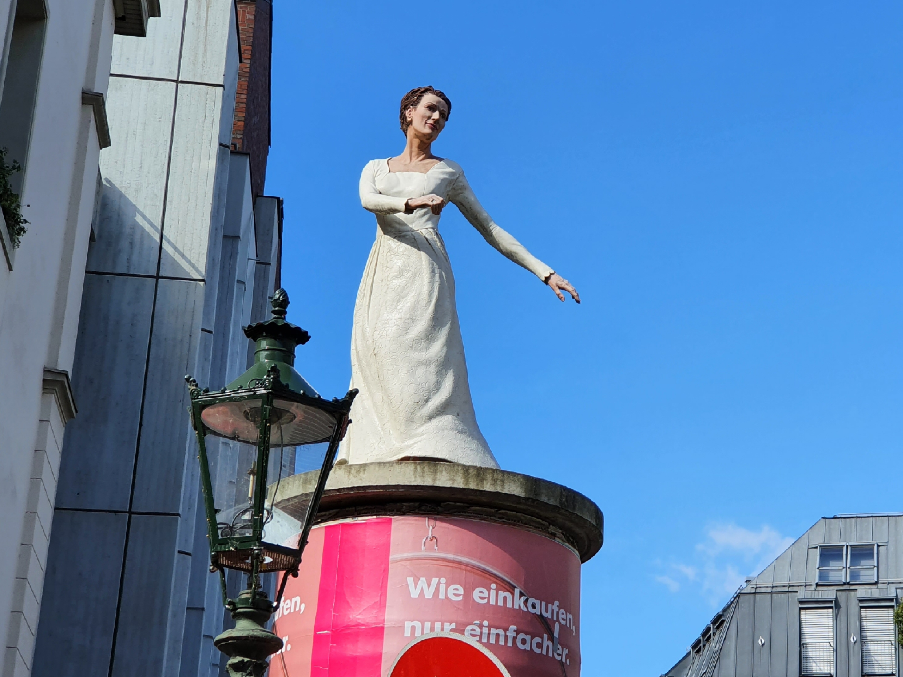
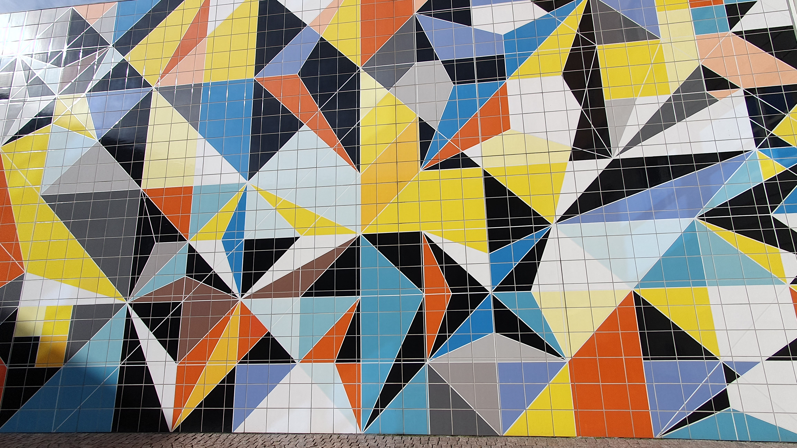
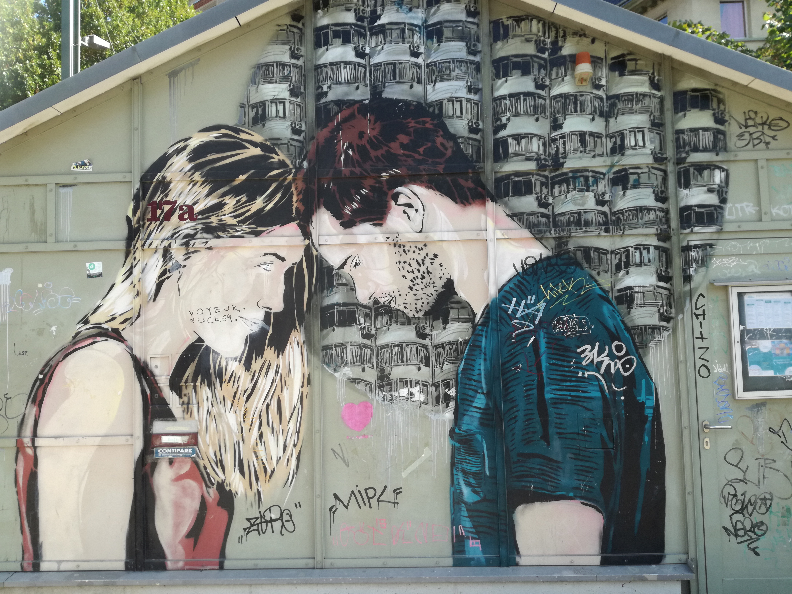
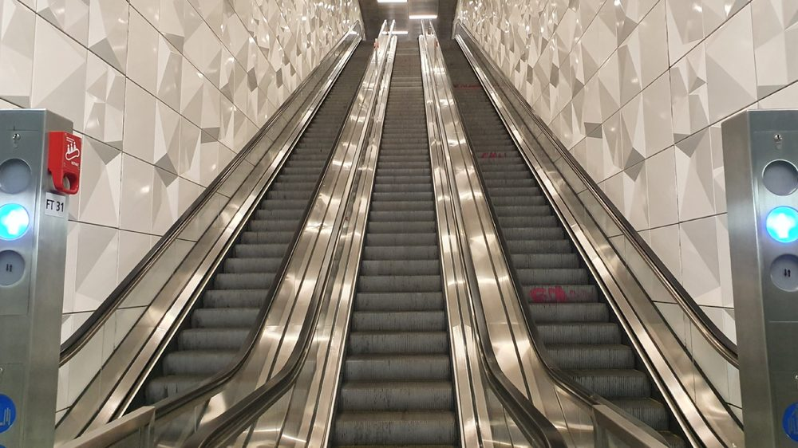
Kunst & Kultur in Düsseldorf
Von der Wehrhahnlinie bis zur Street-Art – zehn Wege, Düsseldorfs kreative Seite zu entdecken.Ob U-Bahnkunst, Skulpturen im Stadtraum oder große Namen wie Joseph Beuys und Heinrich Heine: Düsseldorf hat eine lebendige und vielseitige Kunst- und Kulturszene.
-
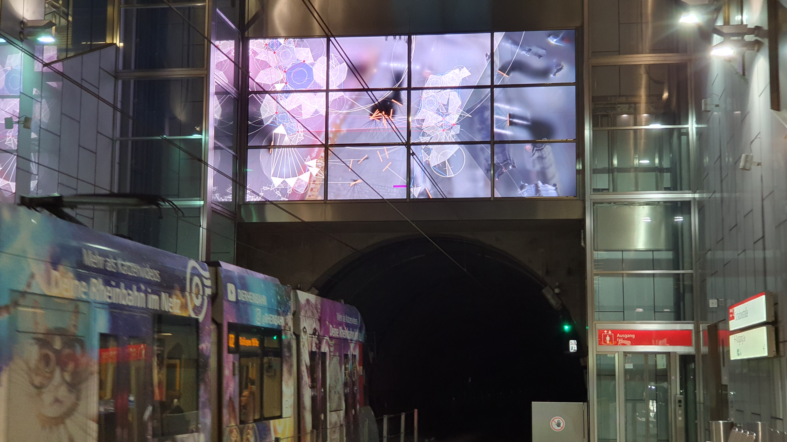
Kunst im Untergrund – die Wehrhahnlinie
U-Bahnkunst • Design • Untergrund
-
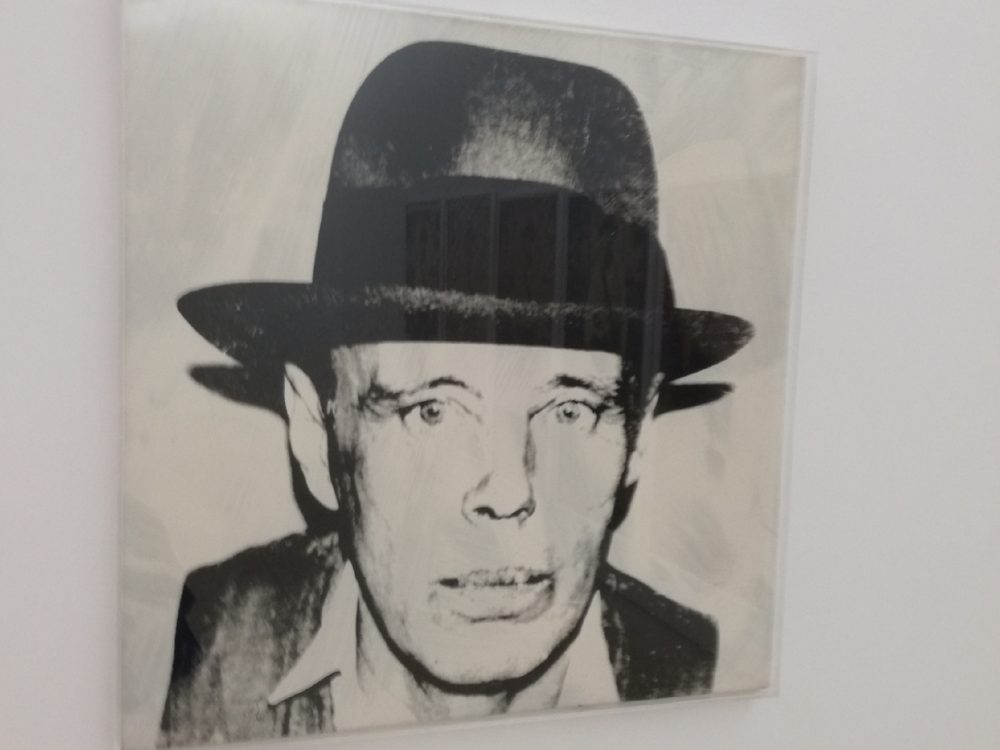
(Kann man) Joseph Beuys verstehen
Aktionskunst • Kunstakademie • Vermächtnis
-
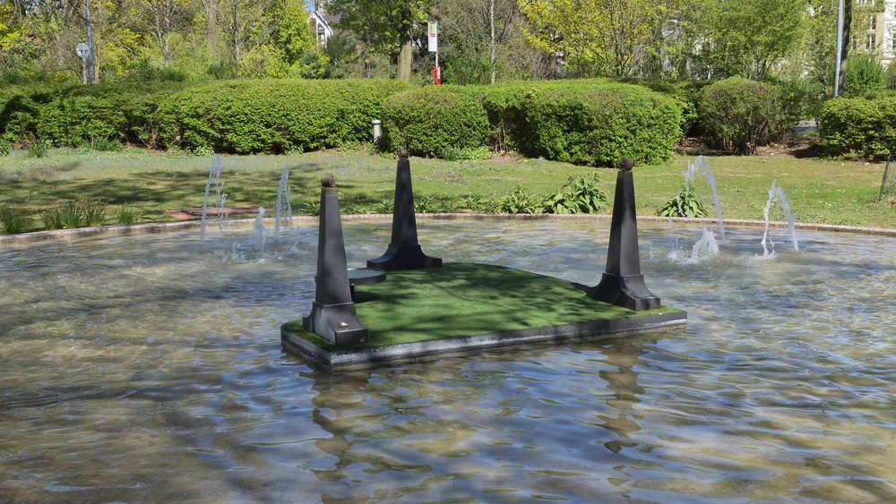
Kunst im öffentlichen Raum
Skulpturen • Plätze • Entdeckungen
-
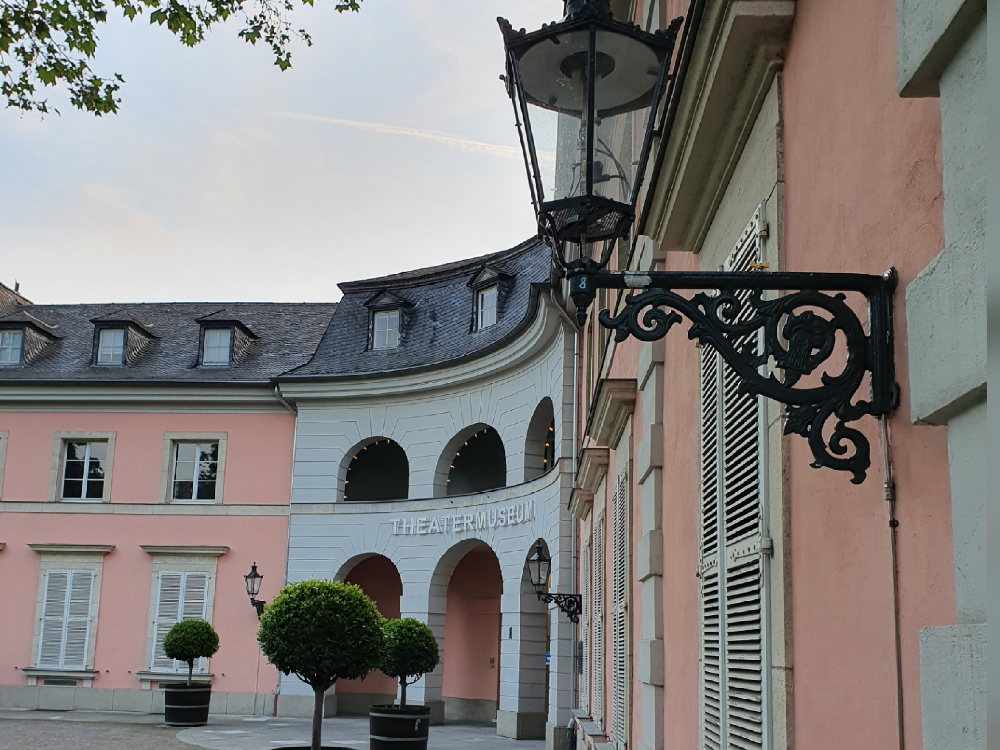
Bühne frei: Düsseldorf macht Theater
Schauspielhaus • Bühnen • Kulturszene
-
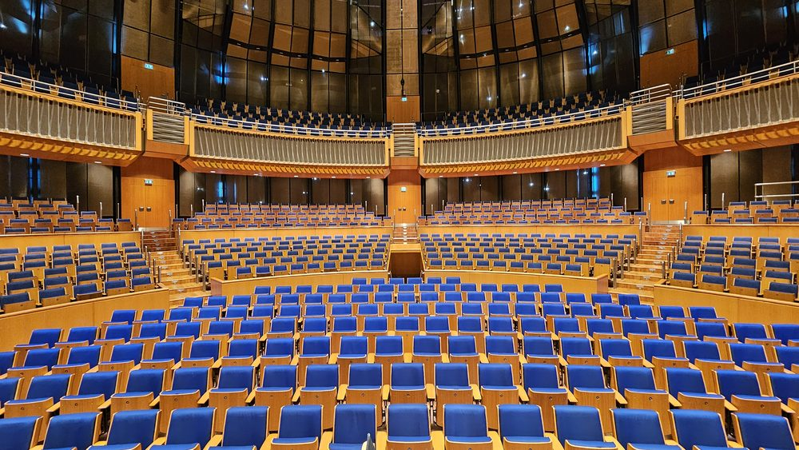
In Düsseldorf spielt die Musik
Robert Schumann • Kraftwer • Die Toten Hosen
-
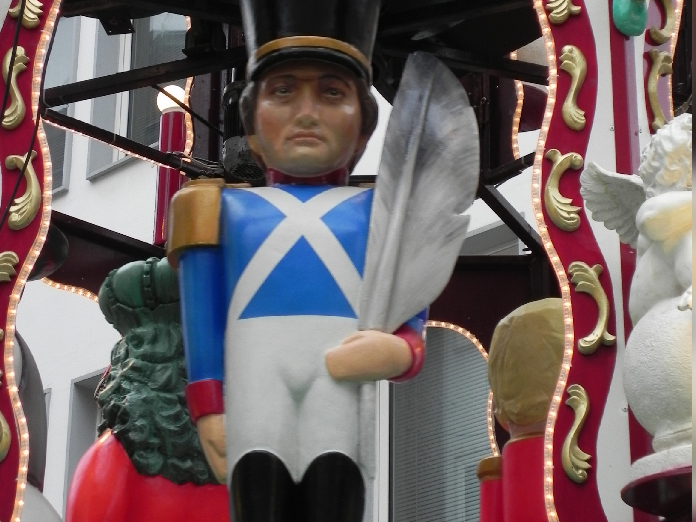
Literaten, Poeten und Dramatiker
Heinrich Heine • Literaturmuseum • Wortkunst
-
Die Säulenheiligen von Christoph Pöggeler
Altstadt • Fassaden • Steinfiguren
-
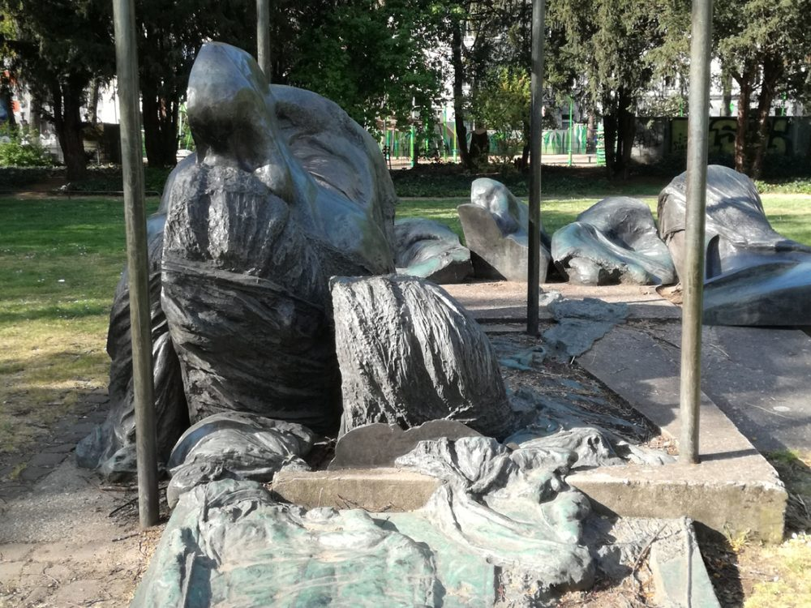
Die Skulpturen von Bert Gerresheim
Bildhauerei • Denkmäler • Stadtgeschichte
-
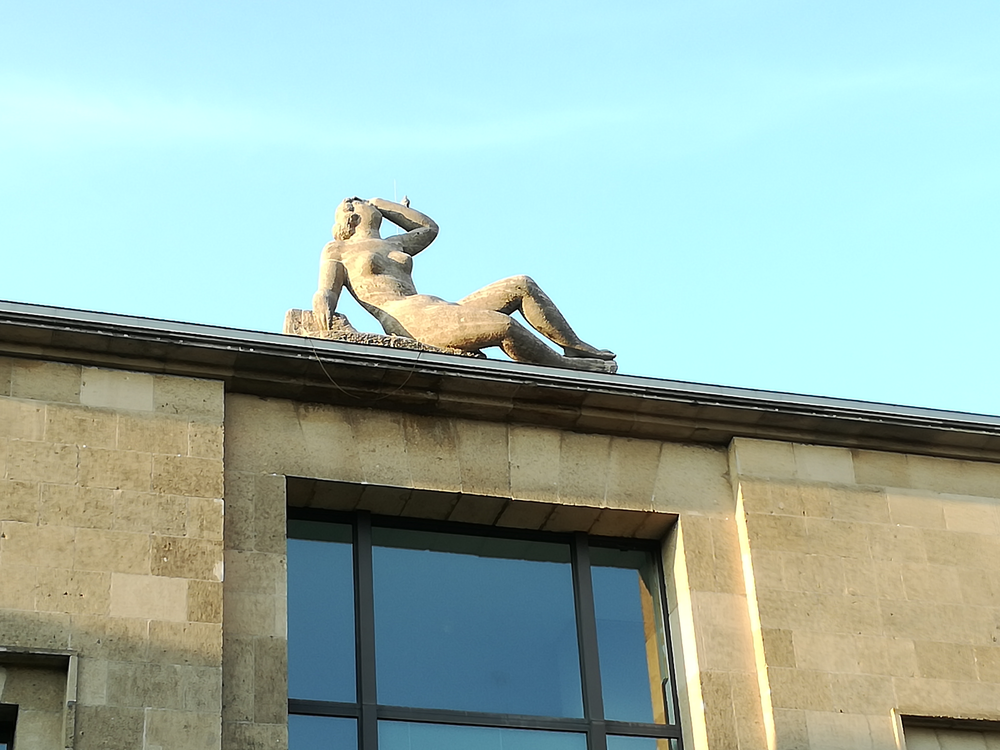
Kunst rund um den Nationalsozialismus
Erinnerungskultur • Mahnmale • Geschichte
-
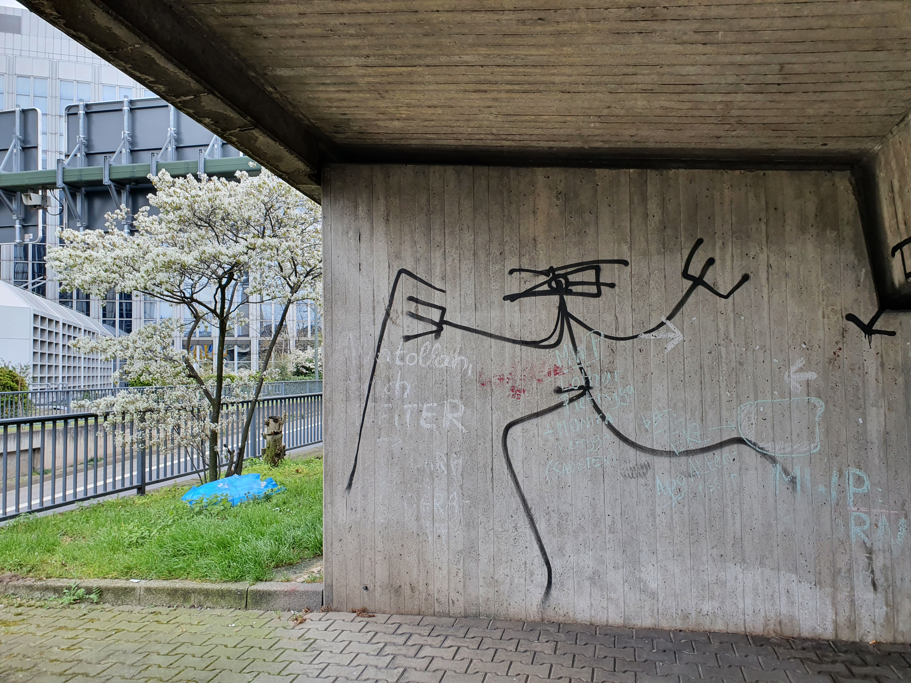
Street-Art
Graffiti • Murals • Urbane Kunst
Nicht das Richtige gefunden?
Gerne gestalten wir eine individuelle Führung nach Ihren Wünschen.